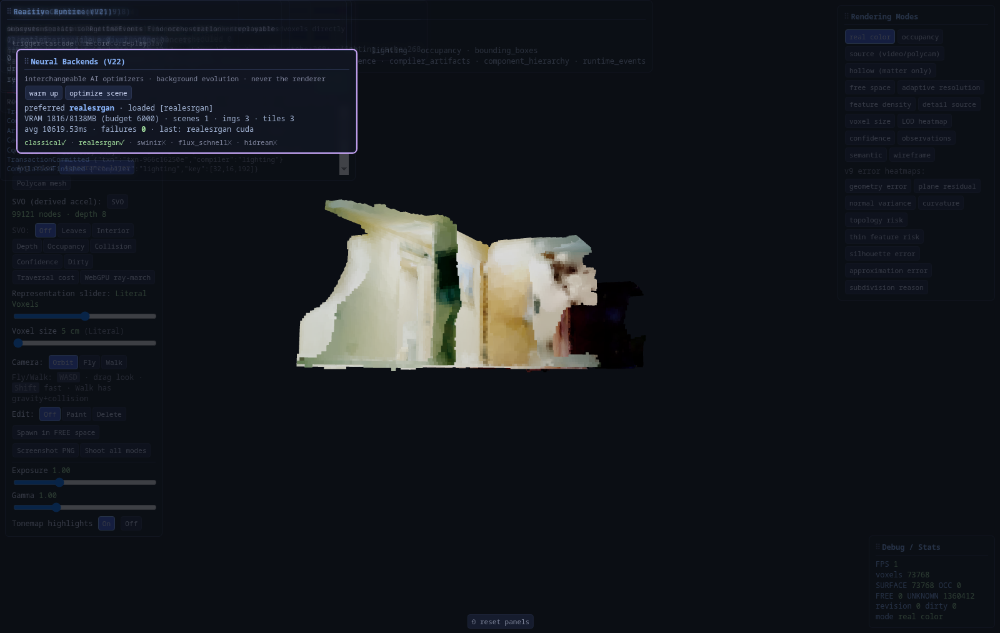
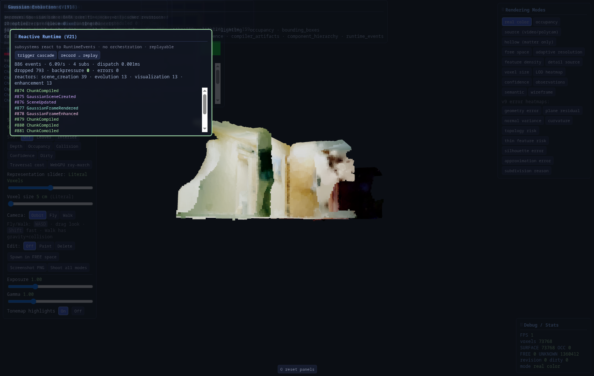
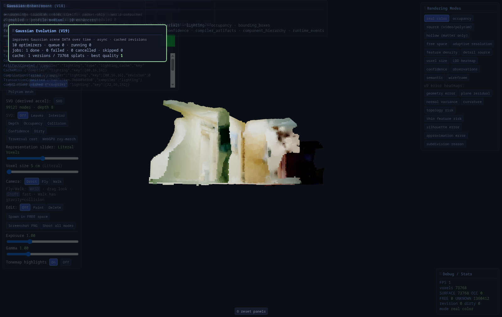

Measured benchmarks for appearance compiler milestones, scan/depth fusion, training cost, and runtime proofs.
Real capture (phone / webcam) Sensor (controlled ground truth) v2.2 (production default) v2.3 continue (not promoted)▲▼ green = better▲▼ red = worse
276/276 tests · time-travel ready
V24, Persistent World Identity
Objects keep UUIDs across observations. Probabilistic multi-signal matching, accumulated confidence, immutable history, and replay without mutating the present.
chair Office→Conference same UUID; spatial weight deliberately low
Attribute change ≠ new object
wall repainted; identity persists, recolored event recorded
Occlusion → re-match
lifecycle Tracked→Occluded; UUID preserved on reappear
New object stays distinct
size-dominated geometry; cup ≠ chair; ambiguity → competing hypotheses
Replay without mutation
state_at/replay/compare from immutable log; versions stamp detection time
Honest matcher
weighted multi-signal heuristic; set_matcher/register_embedder hooks only
Honest limits: matcher is transparent heuristic not learned embeddings; auto merge/split is explicit API only; capture→identity auto-wiring is next integration.
Entities own meaning (hypotheses, attributes, relationships) and only reference authoritative voxels — one evidence path; AI/heuristics propose, humans verify.
Tests260/260
Ontology22 classes
Geometry mutations0
Review states3
Live entities3
AI proposalDoor 0.82
Live panel. Entity list · competing hypotheses · highlight box over Wall region.
Definition-of-success proofs
Claim
Verified
Geometry never modified
every semantic op leaves world.coords byte-identical (14 tests)
Evidence-only mutation
noisy-OR confidence; human verify/override authoritative
Competing hypotheses
Wall entity: Door 0.82 vs Room 0.50 after AI + heuristic proposals
real bounds + voxel refs from authoritative coords
Honest proposer
HeuristicProposer shape-based; no bundled perception model
Honest limits: search() is lexical; HeuristicProposer is geometric not deep AI; real detectors wire via propose(source="ai") through V22 registry later.
Neural models as interchangeable evolution backends — never the renderer. Real-ESRGAN RRDBNet x4 runs on the RTX 2060 SUPER; registry-driven; world untouched.
Tests246/246
Live devicecuda
detail_gain0.75
Views / tiles3 / 3
Failures0
Backends5

Live panel. Preferred realesrgan · VRAM · last cuda optimize.
Definition-of-success proofs
Claim
Verified
Real GPU inference
RealESRGAN on RTX 2060 SUPER; 0 missing weight keys; live /api/neural/control optimize
Registry-only
evolution calls backend.optimize(scene); engine names no model
New cached revision
hallway pass produces new evolution cache entry; world untouched
VRAM / fallback
tiling within budget; CPU fallback on CUDA error; OOM → classical
Honest stubs
FLUX/SwinIR/HiDream report missing weights; never fake
Honest limits: scene update is neural-gated colour-detail transfer (detail_gain), not full splat inverse-rendering; quality_score can stay flat on colour-only changes.
Runtime becomes the backbone: immutable RuntimeEvents, bus + reactors, deterministic record/replay. One world edit cascades VoxelModified → … → GaussianFrameEnhanced with zero orchestration code.
Tests231/231
Canonical types22
Reactors4
Backpressure0
Orchestration in chain0
Replaydeterministic

Live panel. Colour-coded stream · named subscribers · cascade demo.
Honest limits: V11 mark_dirty still schedules compile internally; reactors stay lightweight; LoopbackChannel is in-process; SimulationTick/Playback* vocabulary not yet emitted from those sources.
Improves Gaussian scene data (not pixels) asynchronously: compiler scene → optimizer passes → cached revisions → best version served transparently. Complements V18. Voxel world untouched; rendering never blocks.
Tests164/164
Quality0.65→1.0
Optimizers10
Splats cached73 768
World mutations0
Blocking rendernever

Live panel./api/gevolution/diagnostics — balanced pass cached; quality 1.0.
Definition-of-success proofs
Claim
Verified
Data, not pixels
8 classical optimizers transform splat arrays via GaussianOptimizer.optimize(scene)
Async
persistent queue + worker thread; render/sim never wait
Progressive cache
new revision per pass; hallway 0.65→1.0; history preserved
World untouched
test_world_unchanged_by_evolution
Browser transparency
V18 path uses best_arrays() when cache is better
Extensibility
brighten = class + register; engine unchanged
AI stubs
FLUX / HiDream report blocker; skipped, not fatal
Honest limits: classical splat processing is what runs without GPU weights; quality score is a splat-data heuristic (not perceptual); camera-motion predictive prefetch is scaffolded, predictor TBD.
new enhancer (sepia) = class + register; engine unchanged
AI stubs
RealESRGAN / photorealistic / reflection report exact blocker; no fabricate
Honest limits: classical-CV enhancement is what runs without GPU weights; CPU reference rasterizer ≠ browser WebGL splats; display-mode wiring for the enhanced frame is a follow-up; metadata unprojection is subsampled.
Simulation evolves the authoritative world through time — no new foundation. Tick → behaviors → Runtime → Evidence → World → Compiler (auto) → Visualization. Door open auto-recompiles gaussian 768→764 with zero special integration code.
Tests135/135
Door → splats768→764
Behaviors9
Artifact writes by sim0
auto_wireChunkInvalidated
Determinism✓
Simulation panel. Live tick / time / speed / objects / behaviors / triggers.
Pipeline + interaction proofs
Claim
Verified
Tick pipeline
tick → behaviors+triggers → ctx.change_voxels → Runtime → Evidence → World → Compiler (auto) → Viz
new Behavior (sprinkler) = class + attach; engine unchanged
Honest limits: behaviors are illustrative (architecture over realism); browser play/pause/step UI is a follow-up; world edits should bump runtime revision the same way simulation does.
Honest limits: Three.js live modes still draw via V8–V15 representation paths (browser migration remaining); stylized renderers are the extensible target; screenshots/recording descriptions are engine-side, pixels captured in-browser.
One runtime owns all derived-artifact compilation. Five built-in plugins wrap real Gaussian / SVO / mesh / semantic / lighting logic; dependency ordering, transactions, cache, and error isolation are verified.
Tests105/105
Compilers5
Bus events10
Kernel modules15
World writes0
Extensibilityregister()
World Compiler panel. Live compiler count, artifacts, transactions, failures, and cache rate.
Kernel guarantees (verified in tests)
Property
Verified behavior
Dependency order
gaussian before lighting; topological (compiler, chunk) work
Incremental
only dirty-chunk artifacts recompile
Transactional
invisible until commit · atomic swap · rollback on failure
Cache
same chunk/revision/params → hit, no recompile
Determinism
identical inputs → identical content checksum
Isolation
throwing compiler fails alone; world untouched
Extensibility
implement Compiler + register(); runtime class unchanged
Part 1 honest limits: viewer still reads V11 runtime.compilers for live Gaussian/SVO (Part 2 routes through world.compiler); single-threaded drain today; persistence is metadata + per-compiler payloads.
Global SE(3) pose-graph optimization, loop closure, landmarks, anchors, and incremental world corrections. Synthetic-GT benchmark deliberately surfaces the hard cases — not just the wins.
Measured on CPU synthetic GT only — real-sensor / real-model registration is not claimed. Numerical Jacobians today; analytic + sparse Cholesky for scale-up.
Provider-driven streaming perception into the V11 evidence engine, ICP registration that closes the V10 gap, and a chunked persistent Gaussian scene with a real elliptical splat renderer. Real LingBot inference is unsupported here (no CUDA / no checkpoint) — and that is stated, not faked.
Tests72/72
Splats live73 768
Gaussian chunks268
ICP fitness>0.9
Scale recovery2.5× exact
LingBot drift0
Gaussian Splat (v12). 73 768 elliptical splats from 268 compiled chunks — instanced quads with gaussian falloff, not point sprites.
Measured (docs/V12_BENCHMARKS.md) — synthetic GT + real algorithms
Metric
Value
Basis
ICP known-transform recovery
fitness >0.9 · rmse <0.05 · ~0° rot err
synthetic GT
Umeyama scale recovery
exact (2.5×)
synthetic GT
Non-overlap registration
rejected → pending alignment
synthetic
Gaussian full compile (hallway)
268 chunks / 73 768 splats / ~7.3 s
measured
Gaussian incremental (1 new voxel)
1 chunk recompiled · 23 unchanged
measured
Gaussian serialization
SHA-256 checksummed · corruption detected
measured
Real LingBot throughput / VRAM / traj error
NOT MEASURED
needs GPU + checkpoint
Unavailable hardware was never converted into a passing benchmark. The synthetic provider proves plumbing and math; LingBot’s perception quality is not claimed.
Every modification flows through one runtime: evidence accumulation, six-layer dirty propagation, prioritized incremental recompiles, and a pub/sub event bus. Derived systems consume events; nothing polls, nothing rebuilds globally.
Tests47/47
Events / upload12 028
Dirty chunks31
Dirty layers6
Event types10
Evidence voxels79 439
Runtime Inspector, live. Evidence stats, dirty state, scheduler queue, event totals, confidence histogram, and the streaming event feed.
One GLB upload through the runtime, measured live
Event
Count
What it proves
RevisionCreated
1
The upload became a world revision
CaptureImported
1
Provenance recorded as a Capture
ObservationAdded
5 997
Every voxel backed by an observation
ConfidenceUpdated
5 997
Evidence engine ran per observed voxel
ChunkInvalidated
31
Only affected chunks marked dirty — never a global rebuild
Honest notes carried from the report: confidence is uniform 1.0 on a fresh single-capture world (the mechanism only diverges with re-observation, conflict, and decay); per-voxel heatmap modes are partial; runtime state is in-memory this build; per-voxel evidence dicts need vectorization for very large worlds.
The world-OS milestone: universal upload pipeline, persistent components, SVO-routed queries, revision timeline, and full provenance — trace(point) walks voxel → SVO node → Component → observations → Capture → original file, verified live.
Tests33/33
Raycast speedup4.3×
Formats ingested9
Honest-error routes6
GLB upload5 671 vox
World rev1
World OS panel. Upload, query search, and the live stats line: voxels 79 439 · svo 237 697 nodes · components 3 · captures 1 · world rev 1.
SVO-routed queries vs linear baseline (wos_query_benchmark.json, 73 768 voxels)
Query
Linear baseline
Via SVO
Raycast (carries to picking, probes, LOS)
1 654 q/s
7 076 q/s ▲ 4.3×
nearest_occupied
564 q/s (numpy vectorized)
83 q/s ▼ honest loss
Reported plainly: SVO nearest-neighbour currently loses to a vectorized numpy scan at this scale; a Morton neighbour-search optimization is future work. Raycast-shaped queries are where the octree's empty-space skipping pays.
A derived octree acceleration structure built from the unchanged authoritative VoxelWorld — algorithms audited and adapted from MIT-licensed otaku690/SparseVoxelOctree, no upstream code compiled in. Exact occupancy on all scenes; openings verified open.
Tests19/19
Incremental edit19 ms
Collision95–148k q/s
Sparse topology7.6×
Thin recall1.00
Compression6.7–12×
SVO Depth mode. Node boxes coloured by octree level — huge cells over empty space, fine cells only at the scanned surface (99 121 nodes served, depth 8).
Four benchmark scenes (artifacts/svo/benchmark.json)
Scene
Voxels
Incremental vs full
Collision q/s
Ray q/s
Topology vs dense grid
Hallway (real scan)
73 768
19.6 ms / 1 223 ms
101 607
6 631
0.25× (grid wins)
Thin features
4 519
6.3 ms / 40 ms
148 629
10 597
~1×
Large sparse
19 998
9.1 ms / 1 550 ms
94 939
1 509
7.6× smaller
Dense indoor
13 256
16.1 ms / 123 ms
109 738
4 963
0.12× (grid wins)
Honest limitation, stated in the report: on a small dense surface shell a 1-byte dense grid is more compact in RAM. The SVO wins on sparse scaling, empty-space skipping, hierarchical aggregates, and incremental maintenance — its advantage grows with sparsity. Accuracy verified on every scene: 0 false-occupied, 0 false-empty, thin recall 1.00, doorways open.
Leaves. The occupied leaf shell the collision suite queries.Interior. Aggregate nodes that let traversal skip empty space.
v8's heuristic ("is there detail?") replaced by a guarantee: a region stays one voxel iff it approximates the mesh within a configurable error budget. Appearance is decoupled from geometry via a texture-patch atlas — paintings no longer spawn tiny voxels.
Within 12 mm budget99.9%
Preview voxels8 888
Appearance patches1 534
Plane-snapped1 685
LOD stability0.939
Budget profiles6
v8 heuristic vs v9 error-driven vs v9 appearance layer. Middle: grey = within the 12 mm budget, red = subdivided for geometry, blue = topology. Right: coloured voxels carry texture patches that display detail without subdividing.
v8 heuristic vs v9 error-driven (benchmark_v8_v9.json)
Independent error terms drive subdivision: geometry (master, p95 residual to best-fit plane), normal (p90), curvature (p90 dihedral), topology (never bridge gaps), thin, silhouette — appearance is metadata only and never triggers subdivision. Robust percentiles replaced max after a single LiDAR speckle forced 67k voxels; budgets are calibrated to measured mesh noise (3.3 mm RMS flat / 9.6 mm edges at 24 cm cells).
Tighter budget → more voxels. Honest finding: this phone-LiDAR mesh has ~3–5 mm intrinsic surface noise, so budgets below that force fine voxels everywhere — the sensor sets the floor.
Geometry only. Blue = coarse, within budget; orange = subdivided by measured error.Appearance layer. Same geometry, texture patches supply the visual fidelity.
The Polycam mesh voxelized by measured curvature: 24 cm blocks on flat walls, 3 cm voxels only at edges, corners, and trim. Every voxel anchored to a measured surface sample; zero invented geometry.
Feature voxels10 231
vs uniform13.6×
Wall RMS2.8 cm
Corner error0.28°
Trim uplift3.2×
Invented0
Mesh vs uniform vs feature voxels, top-down. 138 910 undifferentiated 3 cm blocks (middle) become 10 231 feature voxels (right): blue 24 cm on flat walls, red 3 cm at edges and frames.
Uniform @3 cm vs feature voxels, same surface
Metric
Uniform @3 cm
Feature voxels (v8)
Voxel count
138 910
10 231 ▼
Size levels
1 (3 cm)
4 (3 / 6 / 12 / 24 cm, mean 9.5 cm)
Level breakdown
—
2 993 @24 · 234 @12 · 521 @6 · 6 483 @3
Fine voxels on high-curvature trim
12.5% (baseline)
40% ▲
Surface-anchored voxels
100%
100% (0 invented)
Fidelity measured from the mesh + emitted voxels, nothing assumed: 15 fitted planes flat to 2.8 cm RMS; 48 wall–wall corners at 89.7° (0.28° mean error, 1.48° max) with 51% fine voxels at the seams. Tuning insight: on noisy phone-LiDAR, curv_flat ≈ 0.35 — 0.10 left 93% at the finest level, 0.55 over-coarsened the detail away.
Voxel-size mode. Blue coarse walls, red fine detail — resolution allocated where measured.Feature-density mode. The measured curvature signal that drives subdivision.
The Polycam capture served standalone by the authoritative-world server — extracted surface by default, 73 768 literal voxels one click away, all render modes and per-voxel inspection working unchanged.
Voxels73 768
Mesh verts30 974
Texture8192²
Scale12.3 m
Grid106×55×246
FPS63
Literal Voxels, real color, fly mode. The Polycam scan voxelized at 5 cm, with per-voxel inspection (class SURFACE, provenance observed_surface, metric position) at 64 FPS.
Occupancy mode. All-SURFACE, FREE 0 — this direct import is surface-only; carving is the named next step.Wireframe mode. Voxel structure exposed down the corridor, 65 FPS.
Direct Polycam import, measured
Metric
Value
Note
Extracted surface
30 974 verts / 49 475 faces
The real Polycam mesh with its 8192² texture, default view
Literal voxels
73 768 @ 5 cm
Grid 106×55×246, correctly metric (12.3 m hallway)
Render performance
63–65 FPS
Fly mode through the voxel hallway, all modes instant-switch
Free space
0 (surface-only)
No carving run on this import yet — Walk has nothing to stand on; next step
A LiDAR-metric Polycam scan of the same hallway fused into the persistent authoritative VoxelWorld as another observation source. Registration is computed, not hand-tweaked; fusion accumulates, never overwrites.
ICP median0.030 vox
Scale error4.9×
Confidence+15%
Coverage+528
Cross-confirmed2 818
Merge stability1.0
Registration: Polycam → video-built world (PCA coarse + robust ICP)
Metric
Value
Meaning
ICP median residual
0.030 voxels
Sub-voxel — two independent reconstructions are provably the same hallway
ICP mean residual
0.056 voxels
Robust alignment throughout
Implied metric scale
1 unit = 4.91 m
Monocular world was compressed ~4.9× (real hallway 12.3 m, video had ~2.5 m)
The long-standing monocular scale error — flagged honestly since v2 — is now exposed and quantified by a metric source, exactly the value of a second heterogeneous sensor.
Source mode. Blue video-only (6 418), orange Polycam-only (528), green both-agree (2 818) — the green mass is cross-source validation.
Fusion: video-only world vs after Polycam merge
Metric
Video only
After Polycam
Matter voxels
10 014
11 044 ▲
Mean confidence
6.84
7.90 ▲
Mean obs-count / voxel
1.64
1.86 (max 3) ▲
Voxels strengthened
—
2 924
Geometry stability on merge
—
1.0
Polycam import: 30 974 verts / 49 475 faces, metric 12.28 × 5.28 × 2.72 m, 8192² PBR texture baked to vertex colors, 120 000 sampled observations. Not yet done (honest): applying the metric-scale correction (re-voxelization is a deliberate, reversible next step), metric-density surface re-extraction, semantic re-estimation, live Luanti walkthrough.
The VoxelWorld/HAV is unchanged — it stores the TSDF field. The viewer now renders the continuous surface extracted from that field (marching cubes) instead of storage cubes. Extraction runs only where the field was observed; zero geometry invented.
Fidelity (EFS)0.962
Vertices7 809
Faces14 452
Manifold edges0.924
Area12.8 m²
Gaps closed4
The decisive comparison. Same authoritative TSDF field: literal voxels (left) vs the extracted marching-cubes surface (right), vertex colors from observed appearance. A pure representation change; the world is untouched.
v4 (literal voxels) vs v5 (extracted surface), same field
Signal
v4 literal voxels
v5 extracted surface
Representation rendered
11k+ storage cubes
7 809-vert / 14 452-face mesh
Manifold-edge fraction
n/a
0.924
Surface area
—
12.8 m²
Environment Fidelity Score
—
0.962
Look
blocky blob
smooth architectural surface
Authoritative world changed
—
no (derived view only)
Viewer default is now Extracted Surface with a one-click toggle to Literal Voxels, both from the same field via /api/surface. Honest limits: walls are smooth-but-wavy and corners rounded (marching cubes) — plane-snapping + dual contouring is the named next step; fine features need a capture that observed them. Nothing was faked.
Same authoritative v3 world, made recognizable: conservative hole-filling (every fill provenance-tagged INFERRED, free air never touched) plus adaptive per-voxel detail levels. Viewer upgraded with Walk mode and three new render modes.
EIS0.743
vs v3+47%
Holes427 → 0
Free voxelsunchanged
FPS63
Walk modeyes
v3 → v4, same authoritative world
Signal
v3 hollow
v4 adaptive
Environment Identity Score
0.507
0.743 ▲
Enclosed holes
427
0 ▼
Hole-freeness
0.21
1.0 ▲
Matter voxels
10 763
11 362 (+599 INFERRED, +5.6%)
Free voxels (air)
4 850
4 850, unchanged
Detail levels (coarse / medium / fine)
—
9 067 / 1 893 / 402
Fill rule: an UNKNOWN voxel enclosed by observed matter on ≥4 of 6 faces is a gap in a real surface, not open space. Free air never qualifies, so doorways and unseen rooms stay open. Filled-voxel appearance is interpolated from neighbouring observed colour.
v3 (left) vs v4 (right), real-color mode. 427 enclosed holes closed; the shell reads as a continuous surface. Free space untouched.
LOD heatmap. Fine detail (red) concentrates on edges/corners.Inferred-fill mode. Every fill visible in pink — auditable provenance.
Automated QA over the v3 world (3 iterations, measured fixes) plus the official browser engineering client: a Three.js viewer/editor over the single authoritative VoxelWorld, which owns no world state of its own.
FPS63
Voxels15 613
Acceptance13/15
Render modes9
Edit scope3×3×3
Global rebuildfalse
The viewer on the v3 world, real-color mode. Live stats bottom right: 61 FPS, 15 613 voxels, SURFACE 8 047 / FREE 4 850. Bottom left: the click-to-inspect panel with one voxel's authoritative metadata.
QA loop, defects fixed with before/after measurements
Same canonical video, pipeline extended with an occupancy stage (FREE / SURFACE / OCCUPIED / UNKNOWN), a free-space connectivity graph, and a working live VoxelWorld/HAV import. The rule a room is free space bounded by voxelized matter is measured, not asserted.
VerdictHOLLOW
Centreline free1.0
Flood-fill reach99.2%
False-occ air0
HAV import9.9 s
Free spawnyes
v1 → v2 → v3, same canonical video
Metric
v1 point-splat
v2 TSDF
v3 hollow
Reprojection L1
0.0757
0.0543
0.0543 (same surfaces)
Surface voxels
137 685
9 612
8 047 ▼
FREE / OCC / UNKNOWN
none
4 416 / 9 612 / 24 283
4 850 / 10 763 / 29 387
Hallway interior
solid shells
unvalidated
HOLLOW, centreline free 1.0
False-occupied air
—
—
0
Free connectivity
—
—
0.992 (1 region)
Live VoxelWorld import
stalled
not attempted
10 763 vox / 15 177 leaves / 9.9 s ▲
Spawn in free space
no
no
yes ▲
The HAV stall fix was structural, not a tweak: TSDF yields a compact shell over a ~31³ span versus v1's 137k splats over a 1 000-unit span, so live import now runs at 1 090 fills/s. Wall thickness (2 716 inferred voxels) extrudes ≤2 voxels behind surfaces, only into UNKNOWN, never into FREE, and is provenance-tagged as inferred.
Flood-fill proof. Green FREE interior (99.2% reached from the camera, one region) bounded by tan matter.Side slice. Thin matter shell with bounded inferred thickness; unseen space stays UNKNOWN.
Not run this pass (honest)
Item
Status
Note
Live Luanti client walkthrough
not run
Needs interactive human session; world imported with free-space spawn, ready
Restart persistence round-trip
not run
Export-import round-trip deferred
Held-out appearance / exposure norm
not this pass
Iterative refinement, not blocked by the model
Portals / multi-room segmentation
not emitted
Free-space graph exists; this capture is a single hallway region
Absolute metric scale
best-effort (~2 m)
Compressed monocular cloud; richer capture (orbit / AR poses) is the lever
Same canonical phone video as the walkthrough below; fusion upgraded from point-splat to true TSDF volumetric fusion with free-space carving, plane-based semantics, and a 42″-door metric anchor. Deterministic run, same authoritative pipeline order.
Reprojection L10.0543
vs v1−28%
Obs / voxel15.2
Watertight0.99
Surface voxels9.6k
Scale0.0098 m/u
v1 (point-splat) vs v2 (TSDF), same video
Metric
v1 point-splat
v2 TSDF
Reprojection photometric L1
0.0757
0.0543 ▼
Observations accumulated / voxel
1.0
15.2 ▲
Free / occupied / unknown voxels
not classified
4 416 / 9 612 / 24 283
Watertightness (backed fraction)
fan shells
0.99
Surface voxels
137 685
9 612 ▼
Metric scale
arbitrary
0.0098 m/unit via 42″ door (best-effort)
Render coverage
0.99
0.49 ▼
TSDF weighting merges duplicate shells and removes floaters: 14× fewer voxels that reproject 28% more accurately. Coverage drop is the honest cost of keeping only confident voxels; L1 improves anyway. Absolute scale passes its sanity gate but the monocular cloud is geometrically compressed — treat scale as approximate.
v1 vs v2, same view. Left: 137k single-view splats stacked into fan shells. Right: 9.6k TSDF voxels averaging ~15 observations each — sparser on screen but geometrically truer.Where the 14× reduction came from. Side view: v1's duplicate single-view shells sweep out a thick fan (left); v2's TSDF weighting collapses them into one coherent wall (right).
New capabilities in v2
Capability
Measured
Note
Free-space carving
4 416 free / 24 283 unknown
Unseen space never filled solid; confidence + provenance per voxel
Watertightness
0.99 backed fraction
99% of surface voxels backed by ≥2 occupied neighbours
Plane semantics
8 RANSAC planes
wall / floor / ceiling by geometry, inlier-count confidence, wall thickness via parallel planes
Metric anchor
42″ door, conf 0.98
Outlier-robust percentile width + scene-size sanity gate (2–40 m)
Voxel confidence
mean weight 7.27
Real accumulated weight everywhere (v1: single unweighted observations)
Honest limits in v2
Limit
Measured
Fix
Absolute scale approximate
~2 m scene, too small for a real hallway
In-frame metric measurement (ARKit depth / ruler)
Render coverage
0.49 (was 0.99)
Back-and-forth / orbit pass spreads the cloud
Scale-consistency CoV
0.576 unchanged
ARKit/ARCore poses remove SfM scale drift
No loop closure
one-way walk, no revisit
Detected + reported, not invented; capture with revisit
Real phone walkthrough of a home (laundry area to hallway), 464×848, 19.4 s, 582 frames. No synthetic data. Full pipeline in 13.7 s (excl. persistent-world build). v2.4 not trained.
Reprojection L10.076
Coverage0.99
SfM tracked24/24
Scale CoV0.576
HAV leaves38.3k
Processing13.7 s
Phone walkthrough vs BRIO webcam (same pipeline)
Metric
BRIO webcam (Jul 13)
Phone video (Jul 16)
Cross-frame scale CoV
≈30
0.576 ▼
Keyframes tracked
14
24 / 24, 0 lost ▲
Mean pose confidence
0.89
0.897 ▲
Alignment edges / samples
56 / 16 626
156 / 19 170 ▲
Surface voxels
6 154
137 685 ▲
Reprojection L1 / coverage
not measurable
0.076 / 0.99
Same pipeline, better capture motion. Forward walking fixed what tiny webcam baselines could not. Three bugs fixed in this run: gauge-normalisation (negative depth), NumPy 2.x .ptp(), and a slow per-voxel render loop (vectorised).
The reprojection benchmark, visually. Each pair: real frame (left) vs reconstruction rendered from the same recovered pose (right). This is the source of the L1 0.076 / coverage 0.99 numbers above.
Full pipeline run (reconstruction_report.json)
Stage
Metric
Value
Capture
Video frames / extracted / keyframes
582 / 155 / 24
SfM
Frames tracked / mean confidence
24 / 24, 0.897
Alignment
Overlap edges / triangulated samples
156 / 19 170
Alignment
Solved cross-frame scale CoV
0.576
Fusion
Point-cloud points
120 000
Fusion
Surface voxels (confirmed)
137 685 (311)
Components
Proposed (connected-component)
9
Reprojection
Photometric L1 vs original frames
0.076
Reprojection
Coverage
0.99
Persistent world
HAV leaves materialized
38 284
Runtime
Reconstruction processing
13.7 s
Bugs fixed in this run
Bug
Symptom
Fix
Gauge normalisation
Aligned depth went negative
SfM poses define scale; no gauge normalisation
NumPy 2.x .ptp()
API break under NumPy 2
Replaced with portable range call
Per-voxel render loop
Slow novel-view / reprojection path
Vectorised render path
Honest weaknesses in this run
Weakness
Measured
Fix
Single-view voxels
137 374 provisional vs 311 confirmed
Orbit / back-and-forth capture
Residual scale drift
CoV 0.576
Metric anchor or AR poses
HAV materialization cliff
fills stall on large SfM span; in-process deadlock